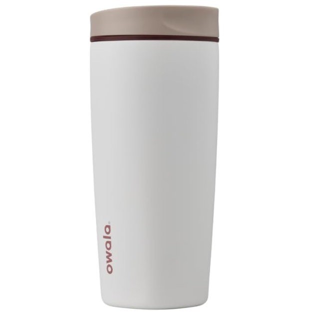

Owala SmoothSip Slider 20 oz Product Review
Amazon's #1 insulated tumbler is moving more than 1,000 units a week in this exact color. The interesting question is not whether Owala is popular—it is whether this lid is actually better for coffee.
CONFIDENCE
QuietTrends may earn a commission when you purchase through links on this site. This helps support our research at no additional cost to you.
Executive Summary
Buy the Owala SmoothSip Slider 20 oz if your priority is a genuinely leak-resistant commuter coffee cup that is pleasant to drink from and small enough for a normal cup holder. Compare first if maximum heat retention, minimal lid parts, or putting the entire cup in the dishwasher matters more than Owala's slider-and-spout design.
The demand signal is unusually strong: the exact High Dive ASIN is currently #4 across Amazon Kitchen & Dining, #1 in Insulated Tumblers, rated 4.6/5 across roughly 14,700 reviews, with Amazon showing 1,000+ bought in the past week.
The exact configuration reviewed here is the 20-ounce High Dive grey/blue model C07542, ASIN B0DF3M7V3T. Amazon and Owala specify a stainless-steel insulated body, leakproof slider lid, SmoothSip spout, six-hour hot and 24-hour cold claims, and a dishwasher-safe lid with hand-washing recommended for the cup. Those are manufacturer and listing claims, not QuietTrends hands-on findings.
RECOMMENDED FOR
The strongest buyer carries coffee rather than nursing it from an open desk mug.
- Commuters who put a coffee tumbler in a tote, backpack pocket or car cup holder.
- People who dislike drinking through a hard-edged travel-mug opening.
- Buyers who want 20 ounces without the bulk of a handled 30- or 40-ounce tumbler.
- Anyone who values a lid that can be fully disassembled for cleaning.
Skip If
- You want the longest possible all-day heat retention.
- You refuse to hand-wash the stainless cup.
- You dislike taking seals and slider pieces apart for thorough cleaning.
- You need a handle; this exact 20-ounce High Dive configuration is the no-handle model.
- You regularly seal extremely hot liquid and dislike pressure changes when reopening a travel mug.
Price Reality Check
The exact High Dive configuration has recently tracked around $23.99 to $29.99. That puts it below many YETI Rambler travel-mug configurations and near the mainstream sweet spot for branded insulated coffee tumblers.
At roughly $24, this is not a speculative gadget purchase. The value question is whether you prefer Owala's drinking experience and leakproof lid enough to accept more lid parts and hand-washing the body.
The current Amazon demand makes discount hunting less important than getting the exact size and lid you want. Owala now sells multiple SmoothSip variants, including handled and ceramic-lined versions. Verify the listing before checkout rather than assuming every SmoothSip has the same capacity, interior or handle.
Product Deep Dive
The SmoothSip Spout Is the Actual Differentiator
Most insulated coffee cups compete on hours of heat retention. Owala's more interesting idea is the lip interface. The SmoothSip opening is rounded and shaped to make drinking feel closer to a normal cup than sipping through a sharp plastic slot.
- The slider closes over the drinking opening for transport.
- The 20-ounce body is narrow enough for standard cup holders.
- There is no straw to manage for hot coffee.
- The lid separates into components so hidden coffee residue can be reached during cleaning.
Buyer takeaway: if you already own a perfectly good YETI or Contigo, the reason to switch is the spout and lid—not insulation technology.
Leakproof Is More Useful Than Splash-Resistant
Owala markets the closed Slider lid as leakproof, which is a stronger promise than the splash-resistant lids on many open-straw or magnetic-slider tumblers. The large Amazon rating base supports generally strong satisfaction with that design, though isolated owner reports describe leakage around the slider or seal.
QuietTrends analysis: any multi-piece lid depends on correct assembly and clean gaskets. After washing, check that the seal is seated flat and test the cup over a sink before trusting it beside a laptop.
Six Hours Hot Is Good, Not Class-Leading
Owala claims up to six hours hot and 24 hours cold. Independent owner discussion commonly describes coffee remaining usefully hot for several hours, while some buyers say YETI or other heavier insulated cups hold high temperatures longer.
That may actually suit commuters who want coffee to become drinkable rather than stay scalding through lunch. Buyers who fill once at dawn and expect genuinely hot coffee late in the afternoon should compare thermal performance rather than assuming all vacuum tumblers behave identically.
Hot Drinks Create a Pressure Quirk Worth Understanding
Sealing hot liquid in an airtight container can create pressure changes as temperatures shift. Recent owner discussion around the SmoothSip Slider includes reports of lids becoming difficult to open after sitting sealed and occasional moisture at the slider. Other owners report no such problem.
- Follow Owala's hot-liquid instructions and leave appropriate headspace.
- Open the slider carefully after the cup has been sealed with a very hot drink.
- Keep the slider and gasket clean and fully dry before reassembly.
- Do not interpret resistance as a reason to force or pry the lid with a tool.
Real-World Ownership Check
With roughly 14,700 Amazon reviews on the exact ASIN family and a 4.6-star rating, this is not an early-adopter product. The ownership pattern is clear enough to separate recurring strengths from manageable annoyances.
- Daily carry: the no-handle 20-ounce shape is easy to fit beside a coffee maker, in a car cup holder, or into a bag pocket.
- Cleaning: the lid is dishwasher safe, but the cup is best hand-washed to preserve its finish. Disassemble the slider and seals rather than rinsing only the visible surface.
- Slider feel: some owners find a new slider stiff; others report that operation becomes easier with use.
- Temperature: expect useful morning-long coffee heat, not necessarily the longest retention in the category.
- Pressure: hot-liquid temperature changes can make a sealed lid feel tighter. Open deliberately.
- Deal breaker: a correctly assembled lid that leaks during a simple sink test should be exchanged rather than tolerated.
What I Would Compare Next
- YETI Rambler 20 oz Travel Mug: compare tougher-feeling construction and thermal reputation against Owala's smoother drinking spout and typically lower price.
- BrüMate Müv: compare lid ergonomics, locking mechanism, handle options and heat retention if spill resistance is the priority.
- Contigo AUTOSEAL: compare one-button convenience and mature commuter-mug history against the Owala's more cup-like drinking experience.
- Owala SmoothSip Slider with Handle: compare if carrying comfort matters more than the compact no-handle profile of this exact 20-ounce model.
Buyer Signal Analysis
The SmoothSip Slider passes the demand gate decisively. Amazon's current page for ASIN B0DF3M7V3T places it at #4 in all Kitchen & Dining and #1 in Insulated Tumblers, with 1,000+ purchases in the past week. Independent Amazon-market tracking previously estimated roughly 4,000 monthly units for the same ASIN. The review count has also grown materially across 2026, which is consistent with continuing sales rather than a one-week promotion spike.
The search landscape is less saturated than the sales rank suggests. Exact-product queries produce Owala and retailer pages, Reddit ownership discussions, shopping pages and a limited number of dedicated reviews. The major review-publisher ecosystem is much denser around the Owala FreeSip water bottle than around this specific SmoothSip Slider coffee tumbler.
Assimilated Signal Sources
- Amazon live listing: verifies exact ASIN B0DF3M7V3T, model C07542, High Dive color, 20-ounce size, current #4 Kitchen & Dining rank, #1 Insulated Tumblers rank, 4.6-star rating, roughly 14,700 reviews and 1,000+ bought in the past week.
- Manufacturer: supports the leakproof slider, SmoothSip spout, insulated stainless construction, cup-holder fit, six-hour hot/24-hour cold claims and cleaning guidance.
- Amazon-market tracking: has estimated thousands of monthly unit sales for this exact ASIN, reinforcing the live bestseller signal.
- Owner discussions: strongly praise the drinking experience and leak resistance while surfacing slider stiffness, cleaning effort, pressure behavior and occasional leakage as the practical watch items.
- QuietTrends analysis: the product's advantage is ergonomic rather than technological. Buyers should choose it because they like how it carries, seals and drinks—not because six-hour heat retention is exceptional.
Unanswered Buyer Questions
- How does six-month gasket and slider reliability compare directly with YETI and BrüMate lids?
- How much does real heat retention vary between coffee filled at 180°F versus near-boiling temperatures?
- Are recent reports of difficult lid opening tied to assembly, gasket condition, beverage temperature or a production change?
- Does the newer handled SmoothSip solve more problems than it creates in cup-holder and bag storage?
- Will Owala eventually make replacement lids and seals easier to buy independently across all colorways?
QuietTrends read: this is a rare product where the bestseller status is supported by a simple usability idea. Owala did not reinvent vacuum insulation; it made the part your mouth touches and the part that keeps coffee out of your bag unusually important.
BUY FOR COMMUTING
Owala SmoothSip Slider 20 oz — High Dive
The SmoothSip Slider has enough demand, owner history and practical differentiation to earn a confident recommendation for everyday coffee carry. The 20-ounce size is sensible, the closed lid is meaningfully more bag-friendly than splash-resistant tumblers, and the drinking spout is the feature owners keep noticing.
Final Buyer Guidance: Buy if you want a compact leak-resistant coffee tumbler and do not mind hand-washing the cup and disassembling the lid. Compare YETI if maximum heat retention matters most, and BrüMate or Contigo if you prefer their locking mechanics. With very hot drinks, follow Owala's instructions and open a sealed cup carefully.
CHECK CURRENT PRICE ON AMAZON →